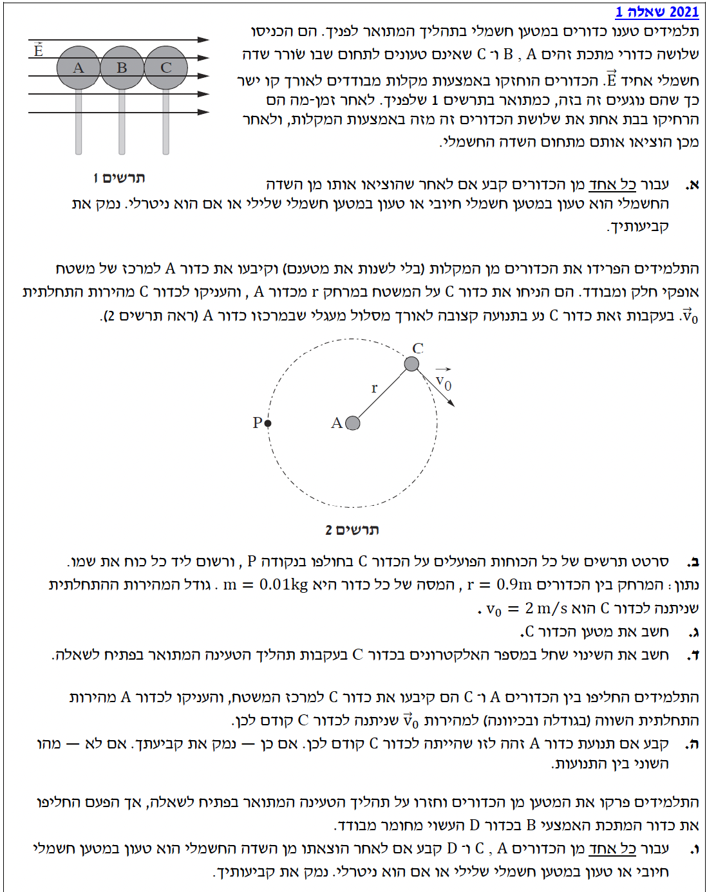
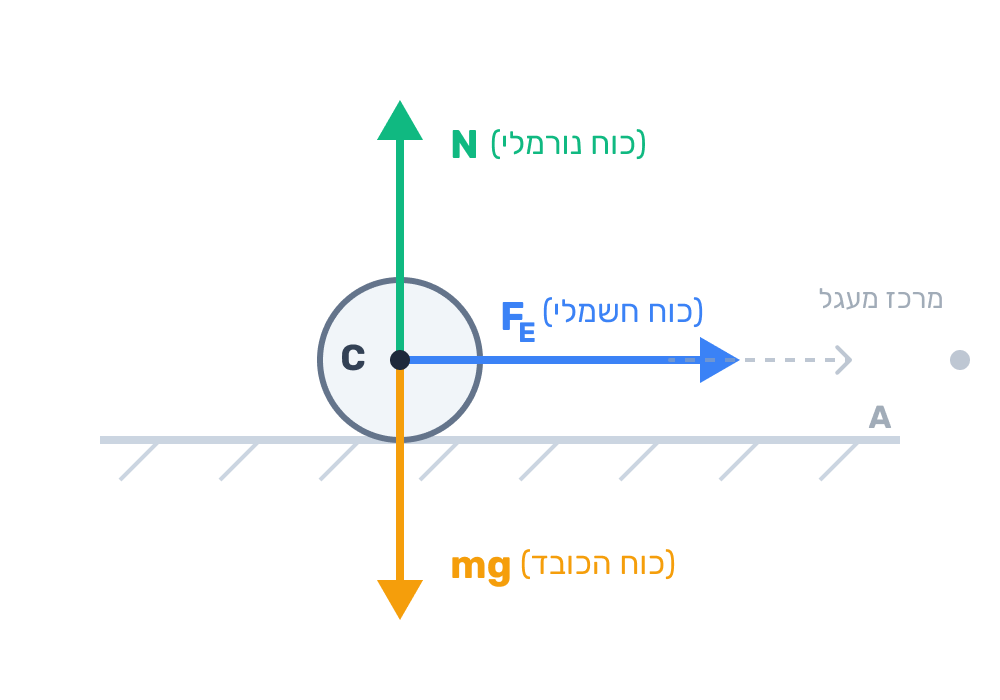

שלום תלמידים יקרים! לפניכם פתרון מלא, מוסבר צעד-אחר-צעד לשאלה 1 מתוך בגרות 2021 בחשמל. השאלה משלבת הבנה קונספטואלית של טעינה בהשראה ושדה חשמלי, יחד עם דינמיקה ותנועה מעגלית. קחו נשימה, קראו היטב את ההסברים, ואל תדלגו על השלבים!

[תמונת השאלה המקורית]לא נמצאה תמונה בשם question-image.png באותה תיקייה.
סעיף א' - קביעת מטען הכדורים
סימולציה פעילה: טעינה בהשראה וקיטוב
הפעילו את השדה החשמלי כדי לראות את האלקטרונים נודדים שמאלה. לאחר מכן נסו להפריד את הכדורים תחת השדה ומחוצה לו כדי לבחון את הקיטוב המקומי לעומת הקיטוב הגלובלי.
הסבר המצב: שדה כבוי וכדורים נוגעים זה בזה. המערכת כולה נטולת מטען נטו והמטענים החופשיים מפוזרים באופן אחיד יחסית.
🔬 חשוב לזכור - המודל מול המציאות:
הסימולציה שמוצגת כאן היא המחשה (מודל). במציאות, בכל כדור ישנם מיליארדי אטומים המכילים פרוטונים (חיוביים) בגרעין ואלקטרונים (שליליים) מסביב. לכן, תמיד יש גם מטען חיובי וגם מטען שלילי בכל נקודה בחומר!
הסימנים של ה־(+) וה־(-) שמופיעים בהדמיה אינם חלקיקים בודדים שנותרו לבדם, אלא מייצגים רק אזורים שבהם יש עודף או חוסר באלקטרונים. כאשר כדור הוא ניטרלי, בחרנו להציג את המטענים כזוגות צמודים, כדי להמחיש שסך המטען באותו אזור מתקזז במדויק לאפס.
מה נתון: שלושה כדורי מתכת (מוליכים) זהים A, B, C במגע זה עם זה, חסרי מטען (ניטרליים) בהתחלה. הם מוכנסים לאזור שבו שורר שדה חשמלי אחיד \( \vec{E} \) המכוון ימינה. לאחר זמן-מה מרחיקים אותם זה מזה בו-זמנית בעודם בתוך השדה, ורק אז מוציאים אותם אל מחוץ לשדה החשמלי.
מה מחפשים: לקבוע אם כל אחד מהכדורים נטען במטען חיובי, שלילי או נשאר ניטרלי בסיום התהליך, ולנמק.
נוסחאות ועקרונות בשימוש: \( \vec{F} = q\vec{E} \)
עקרון ההשראה האלקטרוסטטית (קיטוב במוליך): במוליכים ישנם אלקטרונים חופשיים המסוגלים לנוע. שדה חשמלי מפעיל כוח על האלקטרונים (שהם בעלי מטען שלילי) בכיוון המנוגד לכיוון השדה החשמלי.
הצבה ופתרון:
מכיוון שהשדה החשמלי \( \vec{E} \) מכוון ימינה, הוא מפעיל כוח חשמלי על האלקטרונים החופשיים שבתוך הכדורים המוליכים שמאלה.
מכיוון שהכדורים נוגעים זה בזה, הם מתפקדים כגוף מוליך אחד גדול.
האלקטרונים החופשיים ינועו שמאלה ויצטברו על הכדור השמאלי ביותר, שהוא כדור A.
לכן, כדור A יסבול מעודף אלקטרונים.
במקביל, כדור C, שהוא הימני ביותר, מאבד את אותם אלקטרונים חופשיים שנעו שמאלה, ולכן ייווצר בו חוסר באלקטרונים. הכדור האמצעי B יישאר ניטרלי בקירוב. הסיבה לכך נובעת מסימטריה ומהיותו החלק הפנימי של המוליך המשותף. השדה החשמלי אכן יוצר קיטוב, אך בכדור B כמות האלקטרונים שהוא מקבל מצדו הימני (מכדור C) שווה, בקירוב רב, לכמות האלקטרונים שהוא מוסר מצדו השמאלי (לכדור A). בנוסף, גם אם הכדור עצמו חווה קיטוב מקומי קל עקב השדה, עודף האלקטרונים בצידו השמאלי מתקזז עם חוסר האלקטרונים בצידו הימני, ולכן סך המטען נטו שלו נשאר אפס בקירוב.
כאשר מרחיקים את הכדורים זה מזה לפני שמכבים או מוציאים אותם מהשדה, המטענים "נלכדים" בכל כדור ואינם יכולים לחזור ולנטרל את המערכת.
כדור A: טעון במטען שלילי.
כדור B: ניטרלי.
כדור C: טעון במטען חיובי.
💡 טיפ מורה:
סדר הפעולות קריטי! אם היו מוציאים אותם מהשדה ורק אז מפרידים, האלקטרונים היו חוזרים מיד למקומם (דחייה חשמלית) ושלושת הכדורים היו חוזרים להיות ניטרליים. ההפרדה בעוד השדה פועל היא מה ש"נועל" את הקיטוב והופך אותו למטען קבוע.
סעיף ב' - תרשים כוחות
מה נתון: כדור A קבוע במקומו על משטח אופקי חלק (ללא חיכוך) ומבודד. כדור C נע בתנועה מעגלית קצובה ברדיוס \( r \) סביב כדור A.
מה מחפשים: לסרטט תרשים של כל הכוחות הפועלים על כדור C בחולפו בנקודה P (כפי שמתואר בתרשים 2 במבט על), ולרשום ליד כל כוח את שמו.
נוסחאות ועקרונות בשימוש:
תרשים גוף חופשי (FBD): זיהוי כוחות חיצוניים. יש לנו את כוח הכובד (כלפי מטה), הכוח הנורמלי מהמשטח (כלפי מעלה), והכוח החשמלי בין כדור C לכדור A. מכיוון שמצאנו בסעיף א' ש-A שלילי ו-C חיובי, הכוח החשמלי הוא כוח משיכה שכיוונו אל מרכז המעגל (כדור A).
הצבה ופתרון:
התרשים המוצג להלן מראה את כדור C במבט צד (או חתך) בעת שהותו בנקודה P, על מנת שנוכל להראות את כל הכוחות על הצירים הרלוונטיים. מרכז המעגל (נקודה A) נמצא מימינו של הכדור כאשר הוא בנקודה P (לפי תרשים 2 המקורי).

תרשים הכוחות המופיע מעלה כולל את השמות המלאים: כוח הכובד (\(mg\)) מטה, הכוח הנורמלי מהמשטח (\(N\)) מעלה, והכוח החשמלי (\(F_E\)) המכוון אופקית לכיוון מרכז המעגל.
💡 טיפ מורה:
שימו לב שנקודה P נמצאת משמאל לכדור A. מכיוון שכדור C חיובי ו-A שלילי, קיים ביניהם כוח משיכה. לכן הכוח החשמלי על C יפעל ימינה, פנימה אל מרכז התנועה המעגלית (זהו הכוח הרדיאלי/צנטריפטלי).
סעיף ג' - חישוב מטען כדור C
מה נתון (שלב 0 - המרת יחידות MKS):
מרחק בין הכדורים (רדיוס התנועה): \( r = 0.9\text{ m} \) (כבר במטרים).
מסת כדור C: \( m = 0.01\text{ kg} \) (כבר בקילוגרמים).
גודל המהירות: \( v_0 = 2\text{ m/s} \) (כבר במטר לשנייה).
קבוע קולון: \( k = 9 \cdot 10^9\text{ N}\cdot\text{m}^2/\text{C}^2 \). כל הנתונים כבר ביחידות תקניות, ולכן נוכל להציב אותם ישירות.
מה מחפשים: לחשב את הגודל והסימן של מטען כדור C.
נוסחאות ועקרונות בשימוש:
החוק השני של ניוטון: \( \Sigma\vec{F} = m\vec{a} \)
תאוצה רדיאלית: \( a_R = \frac{v^2}{r} \)
חוק קולון (הכוח החשמלי): \( F = k\frac{q_1 q_2}{r^2} \)
הצבה ופתרון:
ניישם את החוק השני של ניוטון בציר הרדיאלי (הציר הפונה למרכז המעגל). הכוח היחיד שפועל בציר זה הוא הכוח החשמלי \( F_E \).
מכיוון שהכדורים נטענו יחד באופן סימטרי, מטענם שווה בגודלו: \( |q_A| = |q_C| = q \).
\[ \Sigma F_R = m a_R \]
\[ F_E = m \frac{v_0^2}{r} \]
\[ k \frac{q \cdot q}{r^2} = m \frac{v_0^2}{r} \]
כעת נבודד את הנעלם שלנו, שהוא הריבוע של המטען \( q^2 \):
מצאנו בסעיף א' שמטען כדור C הוא חיובי. אנו מקפידים על רישום תשובה סופית עם 3 ספרות מהותיות.
מטענו של כדור C הוא: \( q_C = +2.00 \cdot 10^{-6}\text{ C} \) (או \( +2.00\mu\text{C} \))
💡 טיפ מורה:
איך ידענו להציב במשוואה ששני המטענים שווים בגודלם ( \( |q_A| = |q_C| = q \) )? התשובה טמונה באחד החוקים הבסיסיים ביותר בטבע: חוק שימור המטען. המערכת שלנו התחילה ממצב ניטרלי לחלוטין. לפי חוק זה, מטען אינו יכול להיווצר יש מאין או להיעלם. לכן, אם כדור A צבר עודף אלקטרונים, הוא בהכרח "לקח" אותם מכדור C. זהו חוק אוניברסלי – אפילו בפיזיקת החלקיקים המודרנית, בכל תהליך שבו נוצר חלקיק עם מטען חיובי, חייב להיווצר יחד איתו גם חלקיק עם מטען שלילי זהה בגודלו. בטבע, הפנקס החשמלי תמיד נשאר מאוזן!
סעיף ד' - שינוי במספר האלקטרונים
מה נתון:
המטען של כדור C: \( q_C = +2.00 \cdot 10^{-6}\text{ C} \).
המטען היסודי (מטען של אלקטרון אחד בערך מוחלט): \( e = 1.6 \cdot 10^{-19}\text{ C} \).
מה מחפשים: לחשב את השינוי במספר האלקטרונים בכדור C בעקבות תהליך הטעינה.
נוסחאות ועקרונות בשימוש:
עקרון כימות המטען: המטען הכולל של גוף אינו רציף, אלא מורכב תמיד מכפולות שלמות של מטען בסיסי ויסודי (אלקטרונים או פרוטונים). לכן, המטען הכולל שווה למספר החלקיקים שהתווספו או הוסרו, כפול המטען של חלקיק בודד.
הצבה ופתרון:
הכדור התחיל ממצב ניטרלי והפך לחיובי. משמעות הדבר היא שהוא איבד אלקטרונים. מטען עודף זה הוא בעצם מצבור של אלקטרונים חסרים, שלכל אחד מהם יש מטען בסיסי (המסומן באות \(e\) ומופיע בדף הנוסחאות תחת קבועים בסיסיים). ביחד, סך המטען של הכדור (\(q_C\)) שווה למספר האלקטרונים החסרים (\(\Delta N\)) כפול המטען של אלקטרון בודד:
\[ q_C = \Delta N \cdot e \]
כדי למצוא כמה אלקטרונים עזבו את הכדור, נחלץ את מספר האלקטרונים (\(\Delta N\)) מתוך הקשר שהרגע הגדרנו ונציב את הנתונים:
\[ \Delta N = \frac{q_C}{e} \]
\[ \Delta N = \frac{2.00 \cdot 10^{-6}}{1.6 \cdot 10^{-19}} \]
\[ \Delta N = 1.25 \cdot 10^{13} \]
השינוי במספר האלקטרונים הוא חוסר של \( 1.25 \cdot 10^{13} \) אלקטרונים.
💡 טיפ מורה:
חשוב מאד לא רק לתת את המספר, אלא להסביר את המשמעות (חוסר של אלקטרונים). פרוטונים לא זזים! כל שינוי מטען נובע מנדידת אלקטרונים בלבד. מטען חיובי = עזיבה של אלקטרונים.
סעיף ה' - החלפת כדורים
מה נתון: כעת מקבעים את כדור C למרכז השולחן, ומעניקים לכדור A את המהירות ההתחלתית \( v_0 \) במאונך לרדיוס. כלומר, כעת A אמור לנוע סביב C באותם תנאים.
מה מחפשים: לקבוע אם תנועת כדור A תהיה זהה לתנועה של כדור C קודם לכן. יש לנמק או להסביר את השוני.
נוסחאות ועקרונות בשימוש:
חוק קולון: \( F = k\frac{q_1 q_2}{r^2} \) - הכוח החשמלי הוא כוח פעולה ותגובה (סימטרי לשני הגופים).
החוק השני של ניוטון: \( a_R = \frac{\Sigma F}{m} \)
הצבה ופתרון:
תנועתו של גוף נקבעת על סמך תנאי ההתחלה שלו (מהירות ומיקום) והתאוצה שהוא חווה (הנובעת מהכוחות הפועלים עליו וממסתו).
נבדוק את הפרמטרים עבור כדור A:
1. הכוח הפועל: הכוח החשמלי תלוי במכפלת המטענים \( |q_A \cdot q_C| \). מכיוון שהמטענים שווים בגודלם, גודל הכוח הפועל כעת על A זהה לחלוטין לגודל הכוח שפעל על C קודם לכן (חוק הפעולה והתגובה - החוק השלישי של ניוטון).
2. המסה: נתון בתחילת השאלה כי הכדורים זהים, לכן מסתו של A שווה למסתו של C.
3. תאוצה: מכיוון שהכוח זהה והמסה זהה, על פי החוק השני של ניוטון, גם התאוצה הרדיאלית שחווה כדור A זהה לזו שחווה כדור C.
4. תנאי התחלה: כדור A מקבל את אותה מהירות \( v_0 \) באותו מרחק \( r \).
כן. תנועת כדור A תהיה זהה לחלוטין. הכוח החשמלי ביניהם זהה בגודלו, והכדורים בעלי מסות זהות. לכן תאוצתו של A שווה לתאוצתו של C, ועם אותה מהירות התחלתית הוא יבצע בדיוק את אותה תנועה מעגלית.
💡 טיפ מורה:
הבוחן בודק כאן אם אתם מבינים שכוח חשמלי עובד לשני הכיוונים באותה עוצמה (החוק השלישי של ניוטון - פעולה ותגובה). גודל הכוח ש-A מפעיל על C שווה לגודל הכוח ש-C מפעיל על A, ולא משנה מי חיובי ומי שלילי.
סעיף ו' - שימוש בכדור מבודד באמצעה
סימולציה פעילה: שדה חשמלי ומבודד
הפעילו את השדה החשמלי. שימו לב שכדור D (המבודד באמצע) עובר רק קיטוב דיפולרי מקומי (המולקולות מסתובבות מעט) אך הוא חוסם מעבר של אלקטרונים בין A ל-C.
הסבר המצב: שדה כבוי וכדורים נוגעים זה בזה. הכל ניטרלי והמטענים מאוזנים.
🔬 דיפול מול נדידה חופשית:
שימו לב להבדל העצום! בכדורי המתכת (A ו-C), האלקטרונים החופשיים יכולים לנדוד עד לקצה הכדור וליצור קיטוב חזק. במבודד (D), לעומת זאת, האלקטרונים קשורים לגרעין. השדה החשמלי מסוגל רק למתוח מעט את המולקולה כך שהצד השמאלי שלה יהיה שלילי יותר (דיפול), אך אין זרימה של אלקטרונים דרך המבודד. לכן, כל כדור נשאר עם אפס מטען נטו גם כשהם נוגעים זה בזה תחת שדה!
מה נתון: חוזרים על תהליך הטעינה משלב א', אלא שהפעם כדור B (האמצעי) מוחלף בכדור D שעשוי מחומר מבודד. הכדורים A ו-C מוליכים, ואילו D מבודד. שוב מכניסים אותם מחוברים לשדה חשמלי ומפרידים באותה צורה.
מה מחפשים: לקבוע עבור כל אחד מן הכדורים A, C, ו-D אם לאחרי התהליך הוא טעון במטען חיובי, שלילי או ניטרלי. נמק.
נוסחאות ועקרונות בשימוש:
תכונות מבודדים: בחומר מבודד האלקטרונים קשורים לגרעיני האטומים ואינם חופשיים לנוע לאורך החומר. שדה חשמלי חיצוני גורם לקיטוב מיקרוסקופי (הסטה קלה של ענן האלקטרונים סביב הגרעין), אך אין מעבר של אלקטרונים מגוף לגוף דרך מבודד.
הצבה ופתרון:
כדור D ממוקם בין כדור A לכדור C ומונע מגע ישיר ביניהם. מכיוון ש-D הוא מבודד, אין בתוכו אלקטרונים חופשיים המסוגלים "לזרום" דרכו מצד ימין (מכדור C) אל צד שמאל (לכדור A) בהשפעת השדה החשמלי החיצוני.
בכל אחד מכדורי המתכת (A ו-C) בנפרד, יתרחש קיטוב פנימי (האלקטרונים החופשיים יצטברו בצידם השמאלי), אך מאחר ואין מסלול מוליך בין הכדורים, מטענים לא יכולים לעבור מכדור אחד לשני. כדור D המבודד אמנם יעבור קיטוב חשמלי פנימי, אך גם ממנו ואליו לא יעברו אלקטרונים.
לכן, מאחר וכל אחד מהכדורים התחיל במצב ניטרלי לחלוטין (סך מטען אפס), ואף כדור לא קיבל או מסר אלקטרונים לכדור אחר, סך המטען של כל כדור בנפרד נשאר אפס. לאחר ההפרדה, הקיטוב הפנימי שלהם יתבטל והם יחזרו למצבם ההתחלתי.
כל הכדורים (A, C, D) יישארו ניטרליים בסיום התהליך. המבודד מונע מעבר של אלקטרונים מגוף לגוף, ולכן לא נוצר חוסר או עודף באף אחד מהכדורים.
💡 טיפ מורה:
המונח "קיטוב" (פולריזציה) לא אומר שיש מטען נטו! הקיטוב רק מסדר מחדש את המטענים בתוך הגוף, אך סך כל הפלוסים עדיין שווה לסך כל המינוסים. בלי מוליך שמקשר בין הגופים, אי אפשר להעביר אלקטרונים וליצור עודף מטען חיובי או שלילי בגוף.
נוסח השאלה המקורית
[תמונת השאלה המקורית]לא נמצאה תמונה בשם question-image.png.